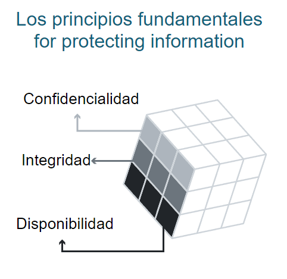
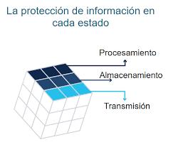
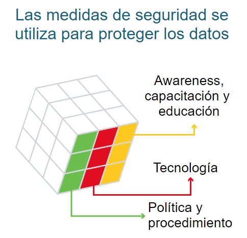

Fundamentos de seguridad
Para que un sistema sea seguro, debemos garantizar su protección. Fácilmente, si guardáramos en una bóveda una computadora para siempre no serviría ya que no podemos acceder a ella. O que guardamos a plena vista y cualquiera puede modificar no estamos asegurando integridad. Es por esto que se ha establecido que la seguridad en computación debe de cumplir ciertas condiciones o estándares para que un sistema sea seguro.
Los fundamentos los podemos resumir a un cubo \(3 \times 3\) ya que hay 3 dimensiones para cubrir, o 27 aspectos a considerar.
1. CIA

Las primeras condiciones (y de hecho las más importantes) son
- Confidencialidad :: Privacidad. Solo la persona autorizada puede meter mano. Algoritmos como AES se dedican a la confidencialidad.
- Integridad :: Verdad, consistencia, unicidad. La información es verídica y no cabe la duda que alguien más le ha hecho algo. Algoritmos como SHA se dedican a garantizar la integridad.
- Disponibilidad (Avaliability) :: Accesible. La información es utilizada siempre que se necesite acceder a ella; como en caso de un apagón, o simple mantenimiento.
Estos 3 elementos definen también conocido como la triada CIA que es la definicion de un sistema seguro. Imaginemos por un momento en los registros de un hospital. Un buen diseño debería ser:
- Solo el paciente y algunos doctores pueden consultar su historial médico (Confidencialidad)
- Nadie más en el hospital salvo el doctor autorizado puede modificar el historial, o si se transfiere a otra base de datos o se imprima permanezca el documento intacto. (Integridad)
- Si el paciente llega de urgencia, siempre deben poder consultar su historial médico rápidamente (Disponibilidad).
Muchas empresas siguen este estándar de seguridad ya que es bastante robutsto.
2. TSP
Esta segunda capa se enfoca en cómo se están asgurando los datos en cada momento al momento de transmitirse, copiarse o guardarse.

- Transmisión :: Cuando se muevan los datos.
- Almacenamiento (Storage) :: Cuando se almacenen los datos
- Procesamiento :: Cuando se copien, modifiquen, lean los datos
Por ejemplo, en una red inalámbrica, los paquetes deben llegar seguros mientras hay interferencia inalámbrica (integridad + transmision). O que cuando los datos se guarden en un servidor, se siga teniendo privacidad y que nadie más pueda acceder (confidencialidad + almacenamiento). O simplemente cuando se modifique un dato, que la modificación pueda ser accedido inmediatamente después de su modificación (procesamiento + disponibilidad).
3. ATP
Finalmente, la última capa se refiere a cómo se llevan a cabo los procesos, o su implementación como tecnologías (software), educación de trabajadores, políticas de seguridad, protocolos etc.

- Cuidado, capacitación y educación :: Cuando educamos a nuestros empleados para que no caigan en fraudes o sean víctimas mediante cursos, dinámicas, mensajes de alerta etc. sobre las 2 capas anteriores.
- Tecnología :: El software utilizado para poder implementar las 2 capas anteriores de manera eficiente.
- Políticas y procedimientos :: Los protocolos a seguir cuando haya brechas de seguridad.
Por ejemplo, se educa a una persona a utilizar sus contraseñas para poder guardar nuevos registros en un hospital (confidencialidad + almacenamiento + personas). O utilizar una base de datos distribuida para poder acceder desde cualquier parte del mundo a los registros (disponibilidad + transmision + tecnología) o finalmente cuando se detecte que alguien está tratando de acceder a un registro no autorizado, inmediatamente notificar a seguridad del hecho (confidencialidad + procesamiento + políticas)
Como puedes ver, cada uno de las 27 combinaciones es de suma importancia considerarlo. Grandes empresas invierten mucho para poder asegurar cada aspecto que pueda ser inseguro; desde un post-it de contraseñas pegado en la computadora hasta configuración de firewall efectiva ante ataques DoS.
En la práctica, es demasiado cubrir todo esto por una sola persona; generalmente se utilizan grupos de trabajo por cada cubito del McCumber. Normalmente no se trabaja siempre pensando en cubrir cada una de estas características. Por ejemplo la integridad puede estar dada por protocolos de internet como TCP, o la confidencialidad por AES lo cual no es necesario reinventar cada uno de estas intersecciones.
Solo debes de entender que la base de la seguridad es la triada CIA. Siguiendo las buenas prácticas lograras un sistema seguro sin necesidad de romperte la cabeza pensando en como procesar información.